Home
ABDUCT
(ab DUKT) v.
to kidnap or carry off by force
Sounds like: DUCK
"ABDUCTED DUCKS"
- The Evil Knight planned to ABDUCT the queen when she came alone to the village.
- Our basketball team was ABDUCTED by terrorists.
- The neighbor’s boy ABDUCTED our pet pig, and we paid a ransom of a box of cookies to get him back.
GUERRILLAS
(ger RIL uz) n.
members of an irregular military force operating
in small bands behind enemy lines
Sounds like: GORILLAS
"GORILLA GUERRILLAS"
- The GUERRILLAS stormed the town and then fled back into the woods before the army troops arrived.
- GUERRILLAS often have to steal and capture equipment from the enemy as they have none of their own.
- Jack’s mom said he and his friends were a bunch of house GUERRILLAS, but she loved them anyway.
BUFFOON
(buh FOON) n.
one who amuses with jokes and tricks; a
bumbling or ridiculous person, a fool
Sounds like: BABOON

“A BUFFOON of a BABOON”
- Robin is a BUFFOON. At the party he stood on his head and sang Jingle Bells. (n.)
- A little BUFFOONERY sometimes is a welcome thing at a dull gathering. (n.)
- Uncle Jed warned his nephew that his BUFFOONISH behavior did not belong at the dinner table. (adj.)
FLOUNDER
(FLOWN dur) v./n.
to move clumsily; to struggle or proceed
with difficulty; a fish
Sounds like: FLOUNDER (fish)
“A FLOUNDERING FLOUNDER”
- The dog FLOUNDERED through the mud attempting to find his master in the dark night. (v.)
- Jack started his speech but began to FLOUNDER when he couldn’t find his notes. (v.)
- A FLOUNDER is a flat fish species mostly found at the bottom of coastal lagoons in the Atlantic and Pacific Oceans. (n.)
CULTURE
(KUL chur) n.
the developed pattern of one’s knowledge,
beliefs and behavior
Sounds like: VULTURE
“VULTURES with CULTURE”
- The CULTURE of ancient Egypt has been studied perhaps more than any in mankind’s history.
- It is in most CULTURES to be nice to your fellow man.
- A CULTURED person often reads great literature, appreciates fine art, and eats good food.
ELEGANT
(EL uh gunt) adj.
characterized or exhibiting elegance;
excellent
Sounds like: PELICAN
“An ELEGANT PELICAN is a very fine bird.”
- The presidential ball was an ELEGANT affair.
- The Princess was dressed in an ELEGANT Thai silk gown for the ball.
- The ever-popular playwright, Tennessee Williams, wrote ELEGANTLY about the decadent South. (adv.)
INHABIT
(in HAB it) v.
to live or dwell in
Sounds like: RABBIT

“RABBITS INHABIT holes.”
- Ants INHABIT ant hills.
- People INHABIT houses and buildings.
- Dinosaurs INHABITED the Earth millions of years ago.
GOAD
(gohd) v.
to urge, prick or push
Sounds like: TOAD
“Never GOAD a big TOAD.”
- Because he was so tall, Michael’s friends GOADED him to try out for basketball.
- Her friends called Helen “chicken” and GOADED her into becoming a cheerleader.
- Bill’s bad grades GOADED him into studying harder.
FERTILE
(FUR tul) adj.
able to reproduce children, seeds,
or fruits; highly productive
Sounds like: TURTLE
“A FERTILE TURTLE”
- Mabel is our FERTILE cow and has a calf every spring.
- The village was located in a FERTILE valley where many farms grow vegetables.
- Most fiction writers have FERTILE imaginations.
AQUEDUCT
(ACK wa dukt) n.
a large pipe or conduit for carrying
water from a distant location
Sounds like: AQUA DUCK

“AQUA DUCKS working on an AQUEDUCT”
- AQUEDUCTS that carry liquids can be opened, like ditches, or closed, like pipes.
- AQUEDUCTS can be made of stone or wood, as well as steel and plastics.
- The Romans built huge AQUEDUCTS to bring water to their cities.
PRANCE
(prants) v.
to act or walk about in a lively manner
Sounds like: DANCE
“The majorette came PRANCING down the street, leading the parade in a high-stepping DANCE.”
- Rodney was a real showboat; every time he made a touchdown he PRANCED about as if he thought he was “hot stuff.”
- Cindy’s horse was trained to PRANCE in the most regal manner.
- Ricky PRANCED down the hall after getting straight As on his report card.
ENCROACH
(in KROHCH) v.
to intrude gradually upon the rights of
another; to trespass
Sounds like: ROACH
“ROACHES will ENCROACH wherever there is food.”
- My sister always ENCROACHES on my side of the couch by lying down and placing her legs on my lap.
- The weeds from the adjacent vacant lot continued spreading with each rain until they ENCROACHED into our vegetable garden.
- The ENCROUCHING tide caused our beach house to fall into the sea. (adj.)
SMITTEN
(SMIT in) adj.
very much in love
Sounds like: KITTEN
“A SMITTEN KITTEN”
- The SMITTEN young man carried a bouquet of flowers for his girlfriend.
- After receiving a birthday card from Laura, Nathan was SMITTEN.
- Brad Pitt ran out of the restaurant with a group of SMITTEN girls trailing behind him.
ALLUDE
(uh LOOD) v.
to refer to casually or indirectly
Sounds like: RUDE
“Not to be RUDE, the hostess only ALLUDED to her guest’s manners.”
- The letter Mark received ALLUDED to something that happened in his college days.
- The merchant often ALLUDED to his military days as the best time in his life.
- It is RUDE to ALLUDE to how much money a person has.
FLEET
(fleet) n.
a group of cars, boats, or
other type of vessels
Sounds like: FEET
“The Postal Service’s new FEET FLEET”
- The Navy’s Seventh FLEET patrols the waters off China.
- A FLEET of new automobiles arrived at the Ford dealership today.
- The Spanish FLEET was sunk by a hurricane in 1765.
PARALLEL
(PARE uh lel) adj.
running alongside;
two lines equally distant
Sounds like: PAIR of Ls
"The PAIR of Ls are PARALLEL in the word PARALLEL.”
- The lives of the Baker twins PARALLEL each other because they are so much alike.
- Christine’s favorite gymnastic event is the uneven PARALLEL bars.
- Two PARALLEL lines will never cross each other.
HORIZONTAL
(HOR uh ZON tul) adj.
parallel to level ground; at right angles
to vertical
Sounds like: HORIZON
“Something in a HORIZONTAL position is parallel to the HORIZON.”
- The police car has a HORIZONTAL stripe painted along its side.
- People sleep in a HORIZONTAL position.
- I placed the painting in a HORIZONTAL position on the wall.
VERTICAL
(VUR tuh kul) adj.
straight up and down; a direction at
right angles to the horizon
Sounds like: ICICLE
“ICICLES always tend to be VERTICAL.”
- The VERTICAL clearance of doors in most houses is six feet eight inches.
- When we hear that something is plumb, we know that it is VERTICAL.
- A VERTICAL cliff of sheer rock was to be found at the top of the mountain.
BLISS
(bliss) n.
great happiness; joy
Sounds like: KISS
“The prince was in BLISS when he gave Sleeping Beauty a KISS.”
- The mother was in BLISS when she held her newborn baby.
- Jane and Glen said their vacation to Hawaii was pure BLISS.
- Dad is in pure BLISS when he gets to sit on the couch and watch his football games all day long.
DRENCH
(drench) v.
to wet thoroughly, to soak
Sounds like: BENCH
“Grandma got DRENCHED waiting on the BENCH.”
- The cat was DRENCHED from the rain.
- The rainstorm DRENCHED everyone in the stadium.
- Agnes DRENCHES herself in cheap perfume.
SHUN
(shun) v.
to keep away from; to take pains to avoid
Sounds like: SUN
“At the beach, Dad would always SHUN the SUN.”
- Ralph was SHUNNED by everyone in his class because he rarely took a bath.
- She thought she was a princess and SHUNNED all her friends.
- In large cities it is wise to SHUN dark streets at night.
RESIDENT
(REZ uh dent) n.
one who lives in a place
Sounds like: PRESIDENT
“The PRESIDENT and his family are RESIDENTS of the White House.”
- Although Jack had been a house guest for two years, he was only a visitor and not a RESIDENT.
- We used to live in Ohio, but now we are RESIDENTS of Texas.
- Upon entering the United States, an immigration officer will ask to see your passport to prove you are a U.S. RESIDENT.
RUTHLESS
(RUTH lis) adj.
having no compassion or pity; cruel; merciless
Sounds like: TOOTHLESS
“TOOTHLESS Captain Gums was a RUTHLESS pirate.”
- The RUTHLESS hurricane caused a ten mile swath of destruction through the middle of the state.
- RUTHLESS Coach Ashton made his players run fifty laps around the field.
- The RUTHLESS behavior of Captain Bligh caused a mutiny aboard his ship.
OBSOLETE
(ob suh LEET) adj.
out of date; no longer in use or in fashion
Sounds like: FLEET
“The Norwegian Viking FLEET is OBSOLETE.”
- Jet engines may some day make propeller-driven airplanes OBSOLETE.
- The horse may be OBSOLETE transportation, but it is still a fun way to take a ride.
- OBSOLETE technology made it difficult for the old computers to keep up with the modern ones.
MAGNATE
(MAG nate) n.
a rich, powerful, or
successful business person
Sounds like: MAGNET
“A MAGNATE attracts money like a MAGNET.”
- William Hearst was America’s greatest newspaper MAGNATE.
- Oil MAGNATES own the oil rights in oil fields.
- Donald Trump is a powerful and wealthy real estate MAGNATE.
DESPITE
(dis PYTE) n.
in spite of, notwithstanding
Sounds like: WRITE
“Sammy the snake learned how to WRITE DESPITE having no hands.”
- We had a great time at the picnic DESPITE the rain.
- We went to the movie DESPITE the fact we had already seen it.
- DESPITE his bad table manners, Ralph was a good dinner guest because he helped with the dishes.
CONCEAL
(kun SEEL) v.
to keep from being seen; to put out of
sight; hidden
Sounds like: CON SEAL
“The CON CONCEALED his pet SEAL.”
- We could hear the airplane but could not see it CONCEALED above the clouds.
- Erin found it difficult to CONCEAL her feelings from others.
- We tried to CONCEAL Arnie’s pet elephant in the garage, but he was UNCONCEALABLE.
CLIMATE
(KLIME ut) n.
refers to weather conditions; typical
weather for an area; attitude
Sounds like: CLIMB
“As a climber CLIMBS a mountain, the
CLIMATE gets colder.”
- South Florida has a sub-tropical CLIMATE consisting of warm breezes and sunshine.
- When it started to rain, there was a CLIMATE of optimism among the farmers that the dry season was over.
- My grandparents moved from New Jersey to Florida because they liked the warm CLIMATE.
SWELTER
(SWEL tur) v.
to become exceedingly hot
Sounds like: SWEATER
“SWELTERING in a SWEATER is not the coolest way to diet.”
- The dog SWELTERED in the summer sun without any shade.
- Our air conditioner broke and we began to SWELTER in our rooms.
- The SWELTERING temperatures in a green house create optimum conditions for growing plants.
WEAN
(ween) v.
to withdraw from any type of habit
Sounds like: TEEN
“How to WEAN a TEEN away from the family telephone”
- Baby bottles filled with warm milk are used to WEAN babies from their mother’s milk.
- Her folks tried to WEAN Mabel off her ice cream habit by giving her a teaspoon of sugar every hour.
- Homer WEANED himself off cigarettes by biting his finger every time he wanted a smoke.
SHODDY
(SHOD ee) adj.
of poor quality or make; dishonest
Sounds like: BODY
“TheFrankenstein monster may have been famous, but he sure had a SHODDY BODY.”
- Jill thought the quality of the toys in the store was SHODDY.
- Mary told her friend that leaving her alone at the mall was a SHODDY thing for him to have done.
- Harry quit work because he said it was a SHODDY job at a SHODDY company.
TRANSPIRE
(tran SPIRE) v.
to happen; to become known
Sounds like: VAMPIRE
“At nightfall it TRANSPIRES that VAMPIRES wake up.”
- After the dance it TRANSPIRED that the bus had a flat tire.
- Andrea wanted to know what would TRANSPIRE if she refused to go to school on Fridays.
- A fight TRANSPIRED after Tom was hit in the face with a water balloon.
HOAX
(hokes) n.
a practical joke; something intended
to deceive
Sounds like: JOKES
“David’s HOAX turned out to be a bad JOKE.”
- The story that Ed had won the lottery was just a HOAX.
- A common HOAX is when innocent people are cheated out of their money.
- The rumor that a lion had escaped from the zoo was only a HOAX.
QUALM
(kwalm) n.
a feeling of illness; a disturbing feeling
Sounds like: CALM
“Even though the lake was CALM, the fishermen had QUALMS about their safety.”
- Elizabeth felt stomach QUALMS after eating three hamburgers.
- The pilot had QUALMS about flying after hearing the news about bad weather.
- Liars have no QUALMS about telling lies.
HARSH
(harsh) adj.
unpleasant to the senses or conditions
Sounds like: MARSH
“Life in the MARSH can be HARSH.”
- It was a HARSH winter, and the cold forced the animals to stay in their holes.
- The HARSH words of criticism made us cringe with regret.
- We heard three HARSH sounds and then a thump in the night.
FAMINE
(FAM un) n.
a drastic, wide-reaching shortage of food
Sounds like: FAMILY
“The FAMILY suffered through the worst FAMINE of the century.”
- Many people starve to death during FAMINES around the world.
- The worst FAMINES of this century have occurred in African nations.
- Harry said he was FAMISHED and wanted to know if dinner was ready.
ADJACENT
(uh JAY sunt) adj.
adjoining, next to; near or close
Sounds like: JASON
“No one liked sitting ADJACENT to JASON.”
- Mary lived in a house ADJACENT to the grocery store.
- The baseball park and ADJACENT lands are city property.
- My apartment shakes when my ADJACENT neighbor plays his drums.
WARY
(WEAR ee) adj.
alert, cautious; on guard, watchful
Sounds like: HAIRY
“Always be WARY when you wake up and feel something HAIRY.”
- It is good to be WARY of strangers coming to your door selling things.
- Donna was WARY of snakes in her yard.
- We were always WARY of making mistakes in our chemistry experiments.
DREAD
(DRED) v.
to be in terror of; to fear greatly
Sounds like: BED
“Billy sometimes DREADED going to BED.”
- Many people in Japan live in DREAD of earthquakes.
- Shirley DREADED her annual dental checkups.
- Most people DREAD spiders and snakes and wiggly things.
AGHAST
(uh GAST) adj.
shocked; frightened; terrified; taken back
Sounds like: GHOST
“The GHOST was AGHAST.”
- After the fire, we were AGHAST at the destruction to our home.
- Evelyn was beside herself, absolutely AGHAST that she wasn’t invited to Mary’s tea party.
- Even veteran homicide detectives were AGHAST at the murder scene.
HYPNOTIZE
(HIP no tize) v.
to put into a sleep-like state; to dazzle
as if by suggestion
Sounds like: HIPPO EYES
“HIPPO EYES are famous for HYPNOTIZING.”
- The patient was HYPNOTIZED and experienced no pain during the operation.
- The exciting performance of the trapeze artists HYPNOTIZED the audience.
- Sue went to a HYPNOTIST and requested that he HYPNOTIZE her to stop smoking.
DOVETAIL
(DOVE tail) v.
to combine or unite into a unified whole;
fit together harmoniously
Sounds like: DOVE TAILS
“DOVE TAILS that DOVETAIL”
- The carpenter cut the boards so they DOVETAILED perfectly.
- The engineers had the idea to DOVETAIL the two bridges so that they would come together as one.
- The strikers DOVETAILED their arms and marched down the street in protest.
GAPE
(gape) v.
to become widely open, separated;
to stare in amazement
Sounds like: APE
“The GAPING mouth of an APE devoured the grapes.”
- The deep pit GAPED before him; if he stumbled and fell there would be no rescue.
- There were GAPING differences between what each witness told the police. (adj.)
- When he won the lottery, he shook his head and GAPED in amazement.
OUTFOX
(out fox) v.
to outwit; to overcome by cunning
or cleverness
Sounds like: FOX
“It’s hard to OUTFOX a FOX.”
- The burglar OUTFOXED the police by escaping up the chimney.
- Our teacher was hard to OUTFOX. She had already heard every possible excuse for skipping school.
- Many times mothers will pretend to let their children OUTFOX them.
AFLOAT
(uh FLOAT) adj.
a floating condition; circulating about
Sounds like: GOAT
“A GOAT AFLOAT”
- The canoe was AFLOAT in the stream.
- During the flood, our living room was AFLOAT half way to the ceiling.
- Rumors were AFLOAT that the principal was going to be transferred to another school.
CARP
(CARP) v./n.
to complain; a fish
Sounds like: CARP (fish)
“CARPING CARPS”
- It was tiresome listening to Molly CARPING about her sore foot. (v.)
- CARPING about the weather does no good because you can’t do anything about it. (v.)
- A CARP is an oily freshwater fish native to Europe and Asia. (n.)
ENDORSE
(en DORSE) v.
to give approval or support
Sounds like: HORSE
“A Kentucky Derby winning HORSE ENDORSES his ointment.”
- Many teachers ENDORSE the idea of free lunches for themselves.
- Famous athletes make a lot of money ENDORSING sports products.
- Banks require customers to ENDORSE their checks before they will pay them.
REMAINDER
(re MAIN dur) n.
what is left when a part is taken away;
those left behind
Sounds like: REINDEER
“Because Santa couldn’t take all the REINDEER, Comet became the REMAINDER.”
- The REMAINDER of the pie was put away where dad couldn’t find it.
- For the REMAINDER of the year we had to take a cut in pay.
- When all the beds were filled, the REMAINDER of the team slept on the floor.
AMBLE
(AM ble) v.
to walk slowly; walk with a leisurely gait
Sounds like: CAMEL
“Caravan CAMELS on long journeys rarely run; they AMBLE.”
- After school, Alexander and Tom AMBLED down the road to the fishing hole to catch their dinner.
- “AMBLE on out here,” the dance instructor said to the new student. “Let’s see some of your moves.”
- Jack walked with an AMBLING quality, as if he hadn’t a care in the world. (adj.)
ENROLL
(in ROHL) v.
to make or become a member; to sign
up for something
Sounds like: MOLE
“A MOLE waiting to ENROLL.”
- His dad took Jack to school to ENROLL him in the first grade.
- In order to vote in an election you must ENROLL.
- Leslie wanted to ENROLL in the history class, but the ENROLLMENT was already filled.
SUCCOR
(SUCK ur) n.
help; relief; assistance
Sounds like: SOCCER
“Cheerleaders giving SUCCOR to an injured SOCCER player”
- Doctors provide SUCCOR to their patients.
- The police often provide SUCCOR to those injured in automobile accidents.
- Wounded soldiers are SUCCORED by medics in battlefield conditions. (v.)
FOWL
(fowl) n.
any type of bird; the meat of that bird
Sounds like: FOUL
“A FOWL hit by a FOUL ball”
- Turkey is the FOWL of choice for Thanksgiving dinner.
- Phil raised FOWL on his farm, mostly chickens and ducks.
- Snow geese are FOWL that fly south in the winter.
- Quail are a favorite FOWL in gourmet restaurants.
RUNT
(runt) n.
undersized; a small animal or person
Sounds like: BUNT
“The RUNT laid down a BUNT.”
- The RUNT of the litter is always Karen’s favorite.
- Silver was my RUNT pony, but I loved him all the same.
- Jack’s father affectionately called him “RUNT,” a misnomer because Jack was the biggest member of the family.
PREVAIL
(pree VAIL) v.
to be victorious; to persuade
Sounds like: SAIL
“The boat with the biggest SAIL PREVAILS.”
- His coach PREVAILED upon Joshua to stop moaning about the team’s loss and get ready for the next game.
- The PREVAILING winds were out of the north most of the summer.
- “Justice PREVAILS,” is an expression that means good has won over evil.
FERVOR
(FUR vur) n.
intensity of feeling or expression
Sounds like: FEVER
“Babe Butterfinger had such FERVOR for baseball he even played with a FEVER.”
- Avid sports fans have such FERVOR for their teams they often argue during the games.
- The fans at the ballgame were split, booing and cheering with equal FERVOR.
- As a mark of his dedication and FERVOR for the violin, Zachary practices six hours a day.
WAD
(wod) n.
a small mass of soft material
squeezed into a ball
Sounds like: SOD
“A big WAD of SOD”
- After working all summer, Joey had a good WAD of money stashed away to buy books for school.
- Jake stood before the principal and WADDED his cap into his pocket.
- The detective found a small WAD stained with blood behind the sofa.
AVERT
(uh VERT) v.
to ward off; to turn away; to keep from
happening
Sounds like: HURT
“The quarterback found a way to AVERT getting HURT.”
- We AVERTED our eyes from the solar eclipse.
- The truck driver AVERTED an accident by driving onto the median.
- AVERTING disaster is often times a matter of luck.
ZIGZAG
(ZIG zag) n.
a series of turns in different directions that
nevertheless proceed in a general direction
Sounds like: TAG
“When playing TAG, ZIGZAG to avoid being TAGGED.”
- The blind person ZIGZAGGED his way across the unfamiliar room.
- The trail ZIGZAGGED through the hills.
- ZIGZAGGING through the defenders, the quarterback ran for a touchdown.
WHIMSICAL
(WIM zuh kul) adj.
erratic in behavior; unpredictable;
having a quaint or fanciful quality
Sounds like: SWIM POPSICLE
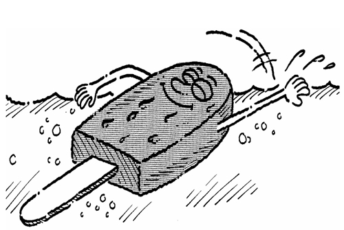
“A SWIMMING POPSICLE is a WHIMSICAL notion.”
- Todd’s suggestion to have a grape catching contest with our mouths was a WHIMSICAL idea.
- Children’s stories often have WHIMSICAL plots; Cinderella is one example.
- Bathing suits fashionable in the 19th century seem WHIMSICAL to us now.
SCAMPER
(SCAM pur) v.
to run hastily or quickly
Sounds like: HAMPER
“The laundry HAMPER SCAMPERED to the finish line.”
- The dogs SCAMPERED across the lawn to the house.
- The cat SCAMPERED after the rolling ball.
- We planned to SCAMPER past the guards when their backs were turned.
AGILITY
(uh JILL uh tee) n.
the quality or state of being nimble, quick
in movement or adaptable
Sounds like: KILL A FLEA
“It takes AGILITY to KILL A FLEA.”
- It takes physical AGILITY to become a good gymnast.
- Chess players must have considerable mental AGILITY.
- Cats are so AGILE that when they fall they always land on their feet.
WAIL
(wail) v.
to cry out loudly
Sounds like: TAIL
“Cats WAIL if you rock on their TAIL.”
- The relatives of the deceased WAILED at her grave.
- Visiting his uncle’s ranch, Billy heard the scary WAILING of a coyote in the night.
- Ghosts are supposed to make WAILING sounds inside haunted houses.
PASSIVE
(PASS iv) adj.
inactive; acted upon but not acting in return
Sounds like: MASSIVE
“Once quite active, Rex got so MASSIVE he became PASSIVE.”
- Hector had a PASSIVE attitude about life and seldom left his home.
- Shirley played a PASSIVE role and went along with whatever her sister wanted.
- Jim was a PASSIVE member of the committee.
CATAMARAN
(KA tuh muh RAN) n.
a boat with two parallel hulls
Sounds like: CAT
“A CAT CATAMARAN”
- CATAMARANS are fast sailboats.
- CATAMARANS are good for sailing in shallow waters.
- We rented a CATAMARAN at the beach this summer.
ACCLAIM
(uh KLAME) n.
enthusiastic public praise and approval
Sounds like: FAME
“ACCLAIM is often the consequence of FAME.”
- When Janet became a movie star in Hollywood, she received enough ACCLAIM to last a lifetime.
- The entire student body came out and ACCLAIMED the returning football team.
- The mayor said he did not seek ACCLAIM; he just wanted to help the city become a safer place to live.
INNATE
(IN nate) adj.
possessed at birth, inborn; a natural
characteristic
Sounds like: HATE
“Dogs have an INNATE HATRED for cats.”
- Hang gliding presents definite INNATE dangers for the participants.
- Most animals have an INNATE intelligence about finding their way to water holes.
- Carl says he INNATELY knows when his wife is going to be mad at him.
UNDERDOG
(UN der dog) n.
a loser or predicted loser in a struggle or contest
Sounds like: UNDER DOG
“The DOG UNDER the rug is definitely the UNDERDOG.”
- Some people find it more fun to root for the UNDERDOG in every sporting event.
- Because our class had never won the tug-of-war, we were considered the UNDERDOGS.
- Everyone expects the favorite to win; therefore, when an UNDERDOG wins, it comes as a surprise.
RETRIEVE
(rih TREEV) v.
to recover; to find and bring back; to
get back
Sounds like: RETRIEVER
“RETRIEVERS will RETRIEVE anything thrown.”
- Eric swam to the bottom of the river to RETRIEVE his favorite fishing lure.
- Peter was able to RETRIEVE all the lost data on his computer.
- Janet searched for an hour before she RETRIEVED her lost purse.
COLOSSAL
(kuh LOS ul) adj.
very big, gigantic; huge in size, extent or degree
Sounds like: FOSSIL
“A COLOSSAL FOSSIL”
- The navy’s aircraft carriers are COLOSSAL ships that carry as many as three thousand sailors.
- Borrowing my father’s car without his permission was a COLOSSAL mistake.
- Jerry had a COLOSSAL ego and thought he was the most handsome guy in school.
PARAPET
(PAIR uh pet) n.
a low wall or railing
Sounds like: PAIR OF PETS
“A PAIR OF PETS on a PARAPET”
- My brother and I built a PARAPET of rocks around our playhouse to keep out the dog.
- When the house caught fire, John jumped from the balcony PARAPET onto the nearest tree.
- The soldiers hid behind a PARAPET so that they wouldn’t be seen.
FETCH
(fech) v.
to go after and bring back; to get as
in a price
Sounds like: STRETCH
“A genuine rubber dog can FETCH by STRETCHING.”
- John asked Paul to go out to the car and FETCH his briefcase.
- The old silverware FETCHED a good price at the charity auction.
- Her father’s telephone call FETCHED Sue home for dinner.
PROTOTYPE
(pro toh TYPE) n.
an early or original example upon which later
examples are based
Sounds like: TOE TYPE
“The original PROTOTYPE of the TOE TYPEwriter”
- In 1903, the Wright Brothers’ airplane was the PROTOTYPE of many future airplane designs.
- The first McDonald’s restaurant was a PROTOTYPE of the thousands that are now everywhere.
- An inventor built a PROTOTYPE of a machine for peeling bananas, but nobody cared to copy it.
ABOUND
(uh BOWND) v.
to be numerous or in great quantity
Sounds like: AROUND

“Animals ABOUND AROUND watering holes.”
- Mosquitoes ABOUND in the summertime.
- Walt Disney World ABOUNDS with tourists all year long.
- Germs ABOUND on an unclean surface.
ZEAL
(zeel) n.
showing great enthusiasm or devotion to a goal
Sounds like: SEAL
“Sammy the SEAL catches fish with great ZEAL.”
- Rachel’s ZEAL is evident in her dancing.
- Hal ate his burger and french fries with ZEAL.
- (A ZEALOT is a person with excessive ZEAL.) When the leader told them to jump, the ZEALOTS all jumped off the bridge.
QUACK
(kwack) n.
one who pretends medical knowledge or
skills that they do not possess
Sounds like: QUACK
“A QUACKING duck who is a QUACK”
- Sue took some QUACK medicine to reduce weight, but never lost a pound.
- Dr. Johnson was a QUACK and had no medical degree at all.
- Watch out for medical QUACKS who pretend they can cure incurable diseases.
SHAMBLES
(SHAM bulz) n.
a scene or condition of disorder or destruction;
to walk or go awkwardly
Sounds like: CAMELS
“When the sheik left, his CAMELS made SHAMBLES of his tent.”
- The fighting soldiers left the town in SHAMBLES.
- After the food fight, the cafeteria was left in SHAMBLES.
- New Orleans was in SHAMBLES after Hurricane Katrina.
INEPT
(in EPT) adj.
awkward or clumsy; lacking in ability
or competence
Sounds like: SLEPT
“Our INEPT watch dog SLEPT through everything.”
- Clarissa always made the most INEPT suggestions about how to improve our work.
- The actors seemed bored and gave an INEPT performance of the play.
- The INEPTITUDE of the lawyer handling Jerry’s case was disgraceful. (n.)
LITERATE
(LIT ur ut) adj.
having the ability to read and write
Sounds like: LITTLE RAT
“A LITERATE LITTLE RAT”
- Switzerland is one of the most LITERATE nations in the world. Practically every Swiss citizen can read and write.
- In our educational system, the goal is for children to become LITERATE by the fourth grade.
- Teaching illiterate adults to become LITERATE is a rewarding experience.
SPLICE
(splice) v./n.
to join or unite by interweaving the stands;
a joint made by splicing something
Sounds like: MICE
“SPLICED MICE”
- The sailor said he could SPLICE two short ropes to make one long one. (v.)
- The electrician SPLICED the two wires. (v.)
- The SPLICE we made came undone after we pulled on both ends of the rope. (n.)
EMBARK
(im BARK) v.
to go aboard some means of transportation;
to set out on a venture
Sounds like: BARK
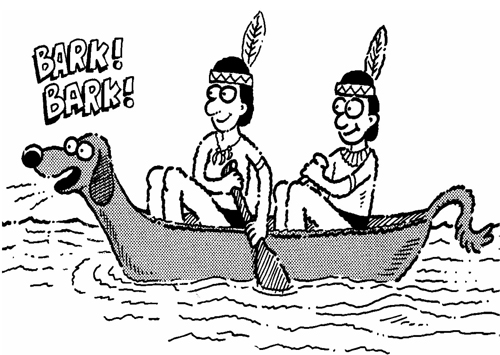
“Indians EMBARKING in a BARK canoe.”
- They were scheduled to EMBARK the ship at noon.
- The nurse reminded us to get our vaccinations before EMBARKING on our trip to Africa.
- We EMBARKED on a journey to Africa to photograph the wildlife.
WAFT
(wahft) v.
to move gently by wind or waves; something
conveyed through the air; a gentle breeze
Sounds like: RAFT
“To get WAFTED out to sea in a RAFT isn’t necessarily a pleasant surprise.”
- A gentle morning breeze WAFTED through the open window.
- The smell of cooked bacon WAFTING through the cabin let everyone know breakfast was almost ready.
- As Jennifer lifted the lid of the pizza box, a delicious aroma WAFTED through the room.
AWRY
(uh RYE) adj.
twisted or turned; wrong, amiss
Sounds like: TIE
“Ed’s first attempt to TIE a TIE went AWRY.”
- The wind blew the window shades AWRY.
- When it started to rain, our plans to go to the beach went AWRY.
- The campaign went AWRY when the candidate refused to make further speeches.
PERTURB
(pur TURB) v.
to make uneasy; to upset
Sounds like: DISTURB
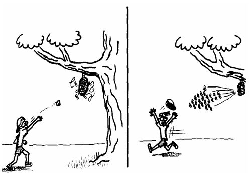
“It highly PERTURBS hornets when you DISTURB their nests.”
- It PERTURBED Bill’s father when Bill took the family car without permission.
- The manager told his salesmen he was PERTURBED about the drop in sales for the year.
- Traveling by air is PERTURBING when the planes are behind schedule.
BULLETIN
(BUL uh tun) n.
a brief announcement of public interest;
a small publication published regularly
Sounds like: BULLET
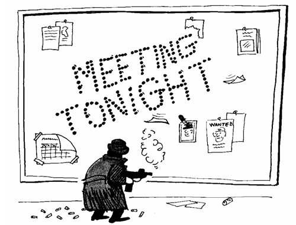
“The mob’s BULLET BULLETIN board”
- Our teacher posted the test results on her BULLETIN board. (adj.)
- There are weather BULLETINS all day long on the television weather channel.
- Our club BULLETIN lists the dates of all meetings and special events.
FELON
(FEH lun) n.
a person convicted of a serious crime
Sounds like: MELON
“FELON MELONS going off to jail”
- A person convicted of a FELONY may be punished by imprisonment in a state prison.
- Stealing a car is considered a FELONY.
- The police arrested a man for carrying a gun with FELONIOUS intentions. (adj.)
STIFLE
(STY ful) v.
to hold back
Sounds like: RIFLE
“A STIFLED RIFLE”
- The jungle heat was STIFLING and we sought shelter in a cave.
- It was a boring party and Jack STIFLED a yawn and looked at his watch.
- The revolt was STIFLED and the culprits were arrested.
POROUS
(POR us) adj.
filled with holes
Sounds like: POOR US

“POOR US, we get POROUS every hunting season.”
- Natural sponges are POROUS marine creatures used for soaking up liquid.
- You can’t have a POROUS roof and not expect it to leak.
- (Something POROUS is said to have POROSITY.) POROSITY is an essential quality of oil bearing rocks.
LIMBER
(LIM bur) adj./v.
flexible; exercise so as to become limber
Sounds like: LUMBER
“LUMBER from the rubber tree is very LIMBER.”
- Ballet dancers have LIMBER muscles. (adj.)
- The team LIMBERED up by doing stretching exercises before the game. (v.)
- Diane was a LIMBER athlete, but she is no longer as flexible as she once was. (adj.)
ENAMOR
(in NAM ur) v.
to inspire with love; captivate
Sounds like: HAMMER
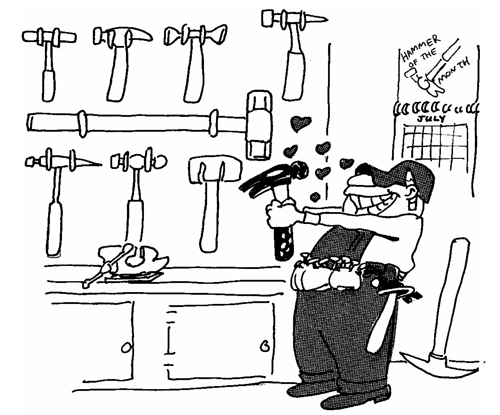
“Duffy is ENAMORED of HAMMERS.”
- Jack was ENAMORED of the idea of going to the Naval Academy and becoming an admiral.
- Bill said what ENAMORS him is a good book.
- The ENAMORING quality of dogs is their devotion to their owners.
UTTER
(UH tur) v./adj.
to make a statement or sound; absolute;
complete
Sounds like: BUTTER
“When the BUTTER begins to UTTER”
- Jean asked Max not to UTTER another word until he heard her side of the story. (v.)
- Harry and Billy crept into the cemetery in UTTER darkness. (adj.)
- The doctor UTTERED a sign of relief after her patient started to breath on his own. (v.)
ADAGE
(AD ij) n.
a short traditional saying; a proverb
Sounds like: ADD AGE
“As we ADD AGE, we learn there is truth in ADAGES.”
- Today, many large companies post ADAGES on their bulletin boards to inspire their employees.
- Our salesman, Homer, entertains his customers with an ADAGE for every occasion.
- “Give me liberty or give me death,” is a famous American ADAGE.
CALAMITY
(Kuh LAM uh tee) n.
an event that causes great misfortune; a disaster
Sounds like: CLAM CITY
“A CALAMITY in CLAM CITY.”
- CALAMITY Jane was a figure from the old west who was aptly named because many misfortunes befell her.
- The movie was a CALAMITY; it cost twenty million to make and audiences hated it.
- Henry is a reckless driver and a CALAMITY waiting to happen.
SURVIVE
(sir VIVE) v.
to remain alive, to continue living or existing
Sounds like: STAY ALIVE
“Those who SURVIVE, STAY ALIVE.”
- Red Riding Hood is a children’s story that will SURVIVE for centuries to come.
- The tomato crop SURVIVED the winter freezes.
- The campers went into the forest and SURVIVED on berries and edible plants for an entire week.
DISMANTLE
(dis MAN tul) v.
to take apart, pull down, disassemble
Sounds like: MANTLE
“Termites DISMANTLING the fireplace MANTLE”
- We DISMANTLED the bicycles and packed them in shipping boxes.
- It was necessary to DISMANTLE the engine in order to clean it.
- DISMANTLING furniture is an everyday event for movers.
SLEAZY
(SLEE zee) adj.
of cheap quality; of low character
Sounds like: FLEAS
“A SLEAZY dog with SLEAZY FLEAS.”
- The only place with rooms available was a SLEAZY hotel.
- Many tabloids are essentially SLEAZY gossip about celebrities.
- James bought a SLEAZY raincoat that leaked when it rained.
FALTER
(FALL tur) v.
to become weaker; to be unsteady
Sounds like: ALTAR
“The groom FALTERED at the ALTAR.”
- Paul’s determination FALTERED when he saw the size of the mountain he hoped to climb.
- Tony stammered and FALTERED when it came his time to speak to the class.
- The swimmers FALTERED as the waves pushed them back.
ENCUMBER
(en KUM bur) v.
to weigh down unnecessarily; to burden;
to impede action
Sounds like: CUCUMBER
“An ENCUMBERED CUCUMBER”
- The boy scouts feared their canoe trip might be ENCUMBERED by a storm that afternoon.
- Favored to win the race, Stephanie came in second because she was ENCUMBERED by a sore ankle.
- His home was ENCUMBERED by a loan from the local bank.
EMBED
(im BED) v.
firmly fixed in a surrounding mass
Sounds like: IN BED
“You can get EMBEDDED IN BED when you jump on it.”
- To EMBED wire in concrete will make the concrete stronger.
- A splinter was deeply EMBEDDED in Rachel’s finger.
- Telephone poles are EMBEDDED deep in the ground so that they won’t fall over.
OBTAIN
(ub TAIN) v.
to gain possession of; to acquire
Sounds like: STAIN
“The clumsy waiter helped Joe OBTAIN a STAIN.”
- Henry OBTAINED permission to go swimming with his friends.
- Walter wanted to know the best way to OBTAIN a pass to the zoo.
- OBTAINING the ability to speak a second language makes it easier to travel abroad.
INTUITION
(in TOO ish uhn) n.
knowledge gained without reasoning or proof
Sounds like: INTO FISHIN’
“It didn’t take INTUITION to know Mr. Smith was INTO FISHIN’.”
- Joe said his INTUITION tells him the robbers will try again this week.
- Mary was a very INTUITIVE salesperson and knew how to sell her products.
- Allison’s INTUITION told her not to drive to the grocery store while it was raining.
RAGE
(rage) n.
violent, explosive anger; a fad or craze
Sounds like: CAGE
“Oscar RAGES when put into CAGES.”
- The crowd went into a RAGE when they heard the announcement that the concert was just cancelled.
- Going barefoot to class is the latest RAGE.
- The home owner RAGED at the firemen for coming late to the fire.
BURDEN
(BIRD in) n.
weighed down; an oppressive load;
something to be endured
Sounds like: BIRD N
“The big N was a BURDEN for the BIRD.”
- The hikers carried their heavy BURDEN up the hill.
- Having eight children has been a BURDEN for her.
- George was BURDENED with sad memories of his long illness.
SCURRY
(SKUR ee) v.
to go or move quickly in a hurried manner
Sounds like: FURRY
“When a FURRY bear came up the tree, the squirrels SCURRIED for cover.”
- The girls SCURRIED about and hurriedly dressed so as not to be late.
- We heard small feet SCURRYING up the stairs.
- The rabbits scampered and SCURRIED up the hill until they reached the cabbage patch.
DIVULGE
(dih VULGE) v.
to make known; reveal, tell
Sounds like: BULGE
“The BULGE DIVULGED what happened to Larry.”
- Harry would never DIVULGE something told to him in secret.
- The scientist DIVULGED information about UFOs that was top secret.
- The robbers never DIVULGED where they had hidden the gold.
ZANY
(ZAY nee) adj.
silly, funny; crazy but likable
Sounds like: RAINY
“On RAINY days, frogs sing, dance and act ZANY.”
- We went to a crazy movie at the mall on Saturday night. It was really ZANY.
- The ZANIEST people I ever saw were an entire fraternity of guys trying to get into a telephone booth at the same time.
- It’s good to see a little ZANINESS in young people having a good time.
FRENZY
(FREN zee) n.
a state of wild excitement
Sounds like: FRIENDS EAT
“Every time I invite my FRIENDS over to EAT, they go into a FRENZY.”
- The frightened dogs yelped and ran about in a FRENZY.
- The sharks attacked the dead fish in a FRENZY.
- A FRENZIED commotion in the hallway caused a crowd of students to gather.
CULPRIT
(KUL prit) n.
a person guilty of doing something wrong
Sounds like: PAW PRINTS
“The PAW PRINTS led to the CULPRIT.”
- The CULPRIT who swiped the tennis balls should put them back.
- Our dad is the CULPRIT who left the water running.
- It is the job of the police to catch CULPRITS.
SCOWL
(skowl) n./v.
an angry frown or to make any angry facial
expression
Sounds like: OWL
“SCOWLING OWLS”
- The witch’s SCOWL scared the trick-or-treaters. (n.)
- Bobby SCOWLED after he was told to finish eating his green beans. (v.)
- It is unfortunate that Mr. Smith has a natural SCOWL; everyone thinks he’s angry. (n.)
DIVERGE
(dih VURJ) v.
to go in different directions from a common point
Sounds like: DIVERS
“When the octopus appeared, the DIVERS DIVERGED.”
- The search party met at the road crossing and then DIVERGED to search for the lost puppy.
- Our children all had DIVERGENT careers.
- The campers DIVERGED from the path and took a shortcut home.
JAR
(JAHR) v.
to bump or shake; to have an irritating effect
Sounds like: JAR

“Being JARRED by a JAR”
- It was a JARRING experience when Mrs. Marsh told us that half the class had failed the exam.
- Rock and roll music JARS my parents’ ears.
- The size of the whale JARRED the sensibilities of the crowd gathered on the beach.
INERT
(in URT) adj.
inactive, sluggish
Sounds like: IN DIRT
“Worms are INERT IN DIRT during the winter.”
- After Thanksgiving dinner, the family sat around and remained INERT the rest of the day.
- The INERTNESS of pigs must be an inherited quality.
- After running for over five hours, Steve ran INERTLY toward the finish line of the marathon. (adv.)
RAZE
(rays) v.
to level to the ground; to tear down or demolish
Sounds like: RAYS
“The alien RAYS RAZED the city.”
- The demolition team RAZED the building so that a new one could be constructed.
- Beach erosion has RAZED the good bathing beaches where we live.
- Bombs RAZED the town until not one building was left standing.
CREVICE
(KREV us) n.
a crack forming an opening
Sounds like: CREVASSE (kruh VAS)
“A small CREVICE sometimes grows into a large CREVASSE.”
- Walter’s lucky coin fell into a CREVICE between two stones and was never seen again.
- The farmer’s weathered face was covered with wrinkles the size of small CREVICES.
- (A large CREVICE is called a CREVASSE.) The mountain climber’s fingers slipped from a CREVICE in the rocks, and he fell into a CREVASSE a thousand feet deep.
NOVELTY
(NAHV ul tee) n.
newness
Sounds like: NOVEL
“The first NOVEL was a NOVELTY.”
- The kids rode their new bikes all day until the NOVELTY wore off.
- When first invented, television sets were only an interesting NOVELTY.
- Visiting Walt Disney World for the first time is an enjoyable NOVELTY.
PALTRY
(PAWL tree) adj.
insignificant; of little value
Sounds like: POULTRY
“PALTRY POULTRY”
- Jake left the waitress a PALTRY tip because her service was poor.
- The PALTRY cowards ran from the battle and refused to defend their country.
- The lawyer was inexperienced and could manage only a PALTRY defense for his client.
DELECTABLE
(dee LEK tah bul) adj.
pleasant, delightful, savory, delicious
Sounds like: LICK THE BOWL
“Granny’s pudding was so DELECTABLE, the family LICKED THE BOWL.”
- The guests said the dinner was DELECTABLE.
- All the frozen dinners look DELECTABLE in the grocery store, but sometimes the food is not as good as it looks.
- There is nothing that smells more DELECTABLE than bacon frying in the morning.
PERIL
(PER uhl) n.
something dangerous or risky; the condition
of being in danger or at risk or harm
Sounds like: PEARL
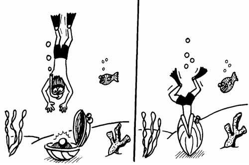
“The PERILS of PEARL diving”
- Because he skipped school, Billy was in PERIL of losing his part in the school play.
- It is PERILOUS to ride a bicycle on the highway at night. (adj.)
- One PERIL of skydiving is you could land in a cactus patch.
LULL
(lull) v./n.
to cause to sleep or rest; a temporary
period of calm
Sounds like: DULL
“The movie was DULL; it LULLED us to sleep.”
- The high winds finally LULLED. (v.)
- Laura’s mom LULLED her to sleep by singing a soothing song. (v.)
- A LULL in the storm gave us a chance to run to our cars and get to safety. (n.)
DOUSE
(dows) v.
to immerse in liquid; to drench
Sounds like: HOUSE
“Firemen DOUSE the burning HOUSE.”
- The fire started in the kitchen, but Billy had the good sense to DOUSE the flames before they spread.
- I quickly DOUSED the rumor I was leaving the school to study abroad.
- Mother DOUSED our dog in flea spray.
DERELICT
(DER uh likt) adj./n.
deserted, abandoned, neglected; a bum
Sounds like: DEER LICKED
“DEER LICKING DERELICTS”
- A DERELICT ship, rusty and unpainted, lay anchored at the dock. (adj.)
- Our coach was DERELICT in her duties and often missed team practices. (adj.)
- DERELICTS who beg in the streets are often the product of broken homes and poor education. (n.)
NOURISH
(NUR ish) v.
to feed and provide the other things necessary
for life and growth
Sounds like: NURSE
“A NURSE’s job is to NOURISH the sick.”
- Jack had a petting zoo and NOURISHED the animals with loving care.
- We NOURISHED hope that the mountain climbers would make it back down the mountain safely.
- The baby was badly MALNOURISHED and in need of NOURISHMENT.
SHACKLE
(SHAK ul) v./n.
to restrain or confine someone or something;
a restraint
Sounds like: TACKLE
“The guard TACKLED the last SHACKLED prisoner.”
- The SHACKLES of ignorance prevent many people from reaching their true potential. (n.)
- The dogs were SHACKLED within the small confines of the walled garden. (v.)
- The prisoner was restrained in SHACKLES as he was placed in the police car. (n.)
FUTILE
(FYOO tul) adj.
having no useful result; not successful; of
no importance
Sounds like: FLUTE
“Playing the FLUTE underwater is FUTILE.”
- It is FUTILE to argue that the moon is made of cheese.
- It was a grand idea, but the band’s efforts to raise a million dollars for the school picnic was FUTILE.
- (FUTILITY is the condition of being FUTILE.) Randy’s hope to run a three minute mile is an exercise in FUTILITY. (n.)
EXPLORE
(ex PLOR) v.
to search for or travel for the purpose of
discovery; to investigate carefully
Sounds like: FLOOR
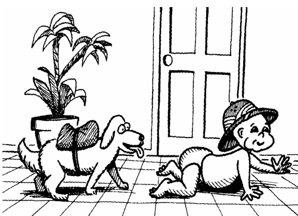
“Toddlers like to EXPLORE on the FLOOR.”
- John and his friends went to Alaska to EXPLORE for gold.
- Billy wanted to EXPLORE the old haunted house on Halloween.
- The EXPLORATION of the North Pole took six months. (n.)
CRAM
(kram) v.
to fill completely or with more than is normally
or easily held; to force into a tight place; to
study hastily
Sounds like: EXAM
“It appeared that Jimmy CRAMMED too much for his EXAM.”
- We tried to CRAM our clothes into one small bag, but it split open on the way to the airport.
- The hungry guest CRAMMED half a turkey into his mouth.
- The streets were CRAMMED with cars after the game.
WRENCH
(rench) v./n.
to pull or turn suddenly; to twist or sprain; a
sudden surge of emotion; a tool used for
holding or turning an object
Sounds like: WRENCH
“A WRENCHING WRENCH”
- Harry WRENCHED his ankle playing basketball. (v.)
- The plumber used his WRENCH to tighten a nut on the drain pipe. (n.)
- It was a WRENCHING experience to visit my sister in the hospital. (adj.)
TURNCOAT
(turn koat) n.
a person who goes over to the other side;
a renegade; a traitor
Sounds like: TURN COAT
“Benedict Arnold was a TURNCOAT in the American Revolution (who TURNED his COAT in favor of the British.)”
- Herman became a TURNCOAT when he quit the Panthers and went over to the Bulldogs.
- When the going gets rough, TURNCOATS show their true colors.
- It’s hard to call Butch a TURNCOAT on account of his changing sides every week.
RECITE
(ree SITE) v.
to speak aloud before an audience; to
tell in detail
Sounds like: TIGHT
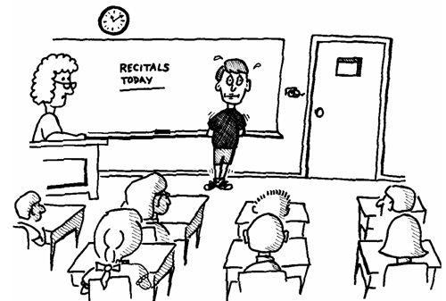
“Jimmy’s mouth shut TIGHT when it came his turn to RECITE.”
- It took an hour for Helen to RECITE all her problems with her older sisters.
- Last night’s dance RECITAL was very interesting.
- Mike’s RECITATION of his poems was met with great applause. (n.)
COMPILE
(kum PILE) v.
to gather together facts from different sources
into a report or a book
Sounds like: COME PILE
“The professors were invited to COME and PILE all their ideas together to COMPILE a book.”
- The author COMPILED a special dictionary of aviation terms.
- The class was assigned the task of COMPILING the records on the baseball team for the past ten years.
- History books are usually the COMPILATION of many events. (n.)
DETAIN
(dih TANE) v.
to keep from proceeding; delay, retard; to
keep in custody, confine
Sounds like: THE TRAIN
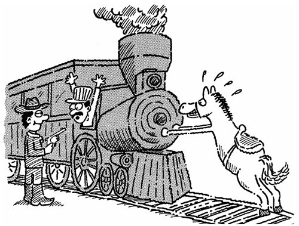
“The bandit DETAINED THE TRAIN.”
- Our ship was DETAINED for three months in the Panama Canal because it had developed a leak in the hull.
- The customs agents DETAINED the man for three hours while they searched his luggage for drugs.
- The defensive tactics of the rebel forces were designed to DETAIN their enemies’ advances.
VEX
(veks) v.
to annoy; to pester; to puzzle
Sounds like: PECKS
“Woodpeckers VEX trees with their PECKS.”
- It was a VEXING situation when Marlene made dates with two boys at the same time.
- We were VEXED with fear when we entered the haunted house.
- Karen VEXED me by always being late.
MINISCULE
(MIN uh skyool) adj.
very small
Sounds like: MINI SCHOOL
“Roger’s MINISCULE MINI SCHOOL”
- It only takes a MINISCULE crack in a dam to start a flood.
- Jane explained she had turned her back only for a MINISCULE moment, but it was long enough for her baby sister to stick her entire face into the lemon pie.
- The teacher gave us a MINISCULE amount of time to finish our math exam.
* MINUSCULE is also a correct spelling.
WADDLE
(WAH dul) v.
to walk with short steps swaying from side to side
Sounds like: BOTTLE
“Babies with BOTTLES WADDLE”
- Ducks always WADDLE when they walk.
- Sailors on ships WADDLE.
- Larry WADDLED from the dinner table after eating his third helping of apple pie.
DETEST
(dee TEST) v.
to dislike intensely; to hate
Sounds like: TEST
“Dave DETESTS taking TESTS.”
- Many people DETEST spiders and snakes.
- Alice has DETESTED swimming ever since she fell into the pool.
- Jack has a DETESTABLE habit of picking his nose during lunch. (adj.)
REFRAIN
(rih FRAIN) v.
to keep oneself from doing, saying, or
thinking something
Sounds like: RAIN
“Friendly clouds trying to REFRAIN from dropping their RAIN”
- The sergeant could not REFRAIN from telling his new recruits they were a bunch of nerds.
- My teacher said, “Please REFRAIN from chewing gum in my class.”
- The police REFRAINED from making any arrests until they had collected all the evidence.
WINDFALL
(WIN fall) n.
unexpected good fortune; something blown
down by the wind
Sounds like: FALLING WIND
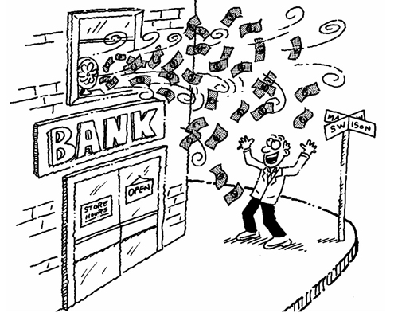
“A WINDFALL caused by the FALLING WIND.”
- Helen’s aunt died and her inheritance was a WINDFALL.
- A WINDFALL of apples blew down in the storm.
- The Jones won a million dollar WINDFALL in the lottery.
FRUGAL
(FREW gul) adj.
not spending a lot of money; not wasteful;
not costly; inexpensive
Sounds like: BUGLE
“What happens when a FRUGAL bugler buys a cheap BUGLE”
- Dad is FRUGAL when shopping for himself.
- In order to save money for the movie, we decided to have a FRUGAL meal.
- Bob was able to retire with a lot of money because of his FRUGAL lifestyle and wise investments.
THROTTLE
(THRAH tul) v./n.
to strangle; a valve or peddle that regulates
the flow of a fluid
Sounds like: BOTTLE
“When you want to THROTTLE a BOTTLE”
- Phil’s mom threatened to THROTTLE him if he tracked dirt into the house one more time. (v.)
- The race car was speeding at full THROTTLE when it crossed the finish line and won the race. (n.)
- When we reached the fishing hole, the captain THROTTLED back the engine. (v.)
IMPALE
(im PALE) v.
to pierce through with any sharp pointed object
Sounds like: PAIL
“An IMPALED PAIL”
- The sales clerk IMPALED his sales order on a nail.
- Roger fell on a stick and IMPALED his hand.
- Butterfly collections usually consist of dead butterflies that have been IMPALED and placed in display cases.
GARBLE
(GAR bul) v.
to confuse, to jumble
Sounds like: GARGLE

“Henry, you sound GARBLED when you GARGLE.”
- In the hurricane, the sinking ship’s radio message was GARBLED.
- Suzy was so excited she GARBLED everything she wanted to say.
- We couldn’t finish building the dog house because the instructions were GARBLED.
PACIFY
(PAS uh fye) v.
to have a calming effect
Sounds like: PACIFIER
“PACIFIERS are great for PACIFYING crying babies.”
- The nurse was unable to PACIFY the patient when he learned his wife had also been injured in their auto accident.
- The troops were PACIFIED when they had a hot meal and a good night’s sleep.
- The police tried to PACIFY the lost boy with some candy.
BILK
(bilk) v.
to defraud, to cheat or swindle; escape
paying one’s debts
Sounds like: MILK
“BILKING MILK”
- Laura’s sister BILKED the cookie jar until she was finally caught.
- The BILKING practices of the insurance salesman finally landed him in jail.
- Ed came to the conclusion that he was being BILKED by his brother-in-law.
EXPEDITE
(EK spih dite) v.
to speed up the progress of something
Sounds like: EXTRA MIGHT
“Super Stork’s EXTRA MIGHT helped EXPEDITE his large baby shipment.”
- When the war broke out the army needed all supplies to be EXPEDITED to the front line.
- Jean’s telephone call to her travel agent EXPEDITED delivery of the airplane tickets.
- We’ll do what we can to EXPEDITE the delivery of your books.
COMMUTER
(kuh MYOO tur) n.
a person who travels from home to
work and back
Sounds like: COMPUTER
“A COMMUTER COMPUTER on his way to work”
- Many COMMUTERS in China ride bicycles to work.
- Many COMMUTERS in big cities have car pools and take turns driving to work.
- COMMUTING long distances from home to work is much easier now that there are freeways. (v.)
MAR
(mar) v.
to render less attractive, less useful;
to spoil to a certain extent
Sounds like: CAR
“Dad, don’t get excited; your CAR’S only MARRED a tiny bit.”
- Our vacation was MARRED by stormy weather.
- Our coach was afraid we might MAR the gym floor with our baseball shoes.
- Tina’s natural physical beauty was MARRED by her disagreeable personality.
GENTEEL
(jen TEEL) adj.
polite; refined
Sounds like: FIN FEEL
“Porpoises are GENTEEL in nature and don’t mind a friendly FIN FEEL.”
- Jane was born into high society where the people are taught to be GENTEEL.
- Even though John was a tough football player, he was an aristocrat with GENTEEL qualities when he was off the playing field.
- One who is GENTEEL has the quality of GENTILITY.
RUE
(roo) v.
to feel regret or sorrow
Sounds like: SHOE
“Hillbilly Bob RUED the day he agreed to wear SHOES into town.”
- Jenny told Bob he would RUE the day he stepped on her toes.
- Phil RUED the day he decided not to go to college.
- While sitting in detention hall, Bobby RUED starting a food fight in the cafeteria.
PLUMB
(plum) adj.
straight up and down, vertical; completely,
utterly
Sounds like: THUMB
“Whenever you give the ‘THUMBS up’ sign, your THUMB is PLUMB.”
- The PLUMB line recorded the water depth at eighteen feet.
- The telephone pole stood PLUMB to the ground.
- The water barrel is PLUMB full.
PRONE
(prohn) adj.
tending or inclined to something; lying flat
Sounds like: PHONE
“Teenagers are PRONE to spend hours on the PHONE lying PRONE.”
- From a PRONE position it is difficult to skip rope.
- Jack and Jill are PRONE to go up almost any hill they come across.
- Parents are PRONE to worry about their children.
WILT
(wilt) v.
to become limp, to droop down; to be
deprived of energy
Sounds like: TILT
“Flowers TILT when they begin to WILT.”
- We WILTED after climbing the mountain in the summer heat.
- The pitcher began to WILT under the pressure of winning the game.
- After a few days in the store, vegetables will begin to shrivel up and look WILTED.
HOSPITABLE
(hos PIH tuh buhl) adj.
receiving guests warmly; having an open
mind; favorably receptive
Sounds like: HOSPITAL
“An overly HOSPITABLE HOSPITAL”
- The hotel guests were treated HOSPITABLY. (adv.)
- Honduras has a climate HOSPITABLE to growing bananas.
- John has always been HOSPITABLE to new ideas.
UNWIELDY
(un WEEL dee) adj.
hard to handle or manage; clumsy
Sounds like: WHEEL
“The first WHEELS were a bit UNWIELDY.”
- The movers had a heck of a time getting our UNWIELDY piano out the front door and down the steps.
- Pushing the stalled car off the highway was an UNWIELDY task.
- For a man of three hundred pounds, you would think Clarence would be UNWIELDY, but he sure could dance.
GRAPH
(graf) n.
a drawing that demonstrates the relationship
between changing things
Sounds like: RAFT
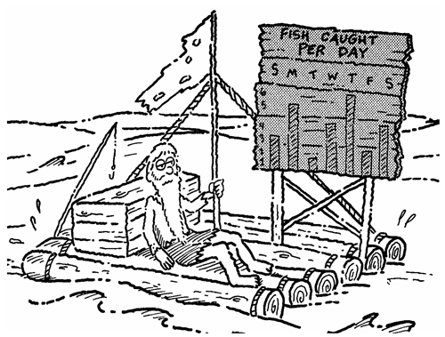
“Keeping a GRAPH on a RAFT”
- Mr. Jones kept a GRAPH to show how much his apple tree had grown each year.
- A GRAPH of the population of the United States would show that it is growing more than two percent each year.
- On Wall Street, the stock brokers keep GRAPHS of the ups and downs of the stock market.
EXTREMITY
(ik STREM ih tee) n.
the outermost part or edge;the greatest degree
Sounds like: TRIM A TREE
“The gardener TRIMMED A TREE’S EXTREMITIES.”
- In the coldest weather, a person’s EXTREMITIES, that is, their feet and hands, suffer the most.
- The diver stood at the EXTREMITY of the cliff and dived into the sea below.
- Even in the EXTREMITY of his depression, Ray smiled bravely and was pleasant to those around him.
INCOME
(IN kum) n.
money received from work or from investments
Sounds like: BUM
“A BUM has no INCOME.”
- Mary was retired and received a steady retirement INCOME from the government.
- Harold lost his job five months ago and has had no INCOME since.
- Everyone pays taxes on their INCOME. It’s called INCOME tax.
TIRADE
(TYE raid) n.
a long, angry, or scolding speech
Sounds like: TIE RAID
“Mr. Cohen fell into a TIRADE when he discovered his children’s TIE RAID.”
- When we lost the game by two points, our coach began an angry TIRADE that lasted an hour.
- John’s mom went into a TIRADE when John wouldn’t clean his closet.
- My boss flew into a TIRADE when I showed up for work late for the third time this week.
PROBE
(prohb) v.
to explore or investigate
Sounds like: ROBE
“Astronauts PROBE the lunar surface in their ROBES.”
- The submarine PROBED the ocean floor in search of the sunken ship.
- The expedition PROBED deep into the Brazilian jungle.
- The school board is PROBING the reason for the teachers’ strike.
COLLAPSE
(KAH laps) v.
to fall down; to fail
Sounds like: TOE TAPS
“All the TOE TAPS COLLAPSED the floor.”
- The runner COLLAPSED half way through the race.
- The weight of the truck caused the bridge to COLLAPSE.
- Many buildings COLLAPSED during the earthquake.
COMPATIBLE
(kuhm PAT uh bul) adj.
suitable; capable of living or existing together
in agreement and harmony
Sounds like: PAT AND BULL
“PAT AND the BULL are COMPATIBLE roommates.”
- The fishing rod is COMPATIBLE with the fishing reel.
- Sarah painted her living room a color COMPATIBLE with the furniture she bought.
- The exotic palm tree we just planted my not be COMPATIBLE with our winter weather.
GALL
(gawl) v.
to irritate
Sounds like: PAUL
“PAUL GALLED everyone at the funeral.”
- Discourtesy GALLS most people as much as dishonesty.
- The saddle GALLED the horse’s back.
- Sadie said she found it GALLING to be stood up by her date for the dance.
MENTOR
(MEN tor) n.
a trusted advisor who is experienced and
is teaching an inexperienced person
Sounds like: MEN SOAR
“Their MENTOR taught the MEN to SOAR.”
- Joyce had many music teachers, but she considered Mrs. Livingston her only MENTOR.
- It is important in business to have a MENTOR who can advise you.
- Phil was more than a coach; he was a MENTOR to the young players on the team.
GORGE
(gorj) v./n.
to stuff oneself with food; also a steep narrow
passage with steep sides
Sounds like: GEORGE
“GEORGE GORGED himself at every opportunity.”
- A small stream ran through the GORGE below the cliffs. (n.)
- The team members GORGED themselves with pizza. (v.)
- All day without food, Jack GORGED his dinner like he hadn’t eaten for a month. (v.)
TIMID
(TIM id) adj.
shy, hesitant, fearful
Sounds like: TIM HID
“TIM HID at his own birthday party because he was TIMID.”
- Our dog TIMIDLY approached the dinner table because he knew he was not allowed to beg for food. (adv.)
- TIMID salespeople usually do not do well.
- The TIMIDITY of the welcoming committee was due to the fact they were not sure who they were supposed to be welcoming. (adj.)
IDEAL
(eye DEEL) adj.
a situation said to be perfect; the best result
or goal of something
Sounds like: MEAL
“The IDEAL MEAL”
- It was an IDEAL day for going swimming in the lake.
- IDEALLY, the best type of government would be one that didn’t require taxes.
- The IDEAL location for a motel is next to a restaurant.
FRET
(fret) v.
to be troubled or worried
Sounds like: PET
“Zachary’s mom began to FRET when his PET grew to full-size.”
- Carl FRETTED over every little thing.
- The team tried not to FRET their coach unnecessarily.
- Carla FRETTED away her vacation worrying about all the homework she still had left to do.
DAZE
(daze) n./v.
a stunned or confused condition; to stupefy
especially by a blow
Sounds like: DAYS
“After his car accident, Richard was in a DAZE for DAYS.”
- The roar of the waterfall DAZED and deafened the tourists. (v.)
- Walter has been walking around in a DAZE ever since he won the lottery. (n.)
- The contender was in a DAZED after receiving a series of blows to the head. (n.)
BEHOOVE
(bee HOOV) v.
to be necessary, proper, or advantageous for
Sounds like: MOVE
“I believe it BEHOOVES us to MOVE.”
- It BEHOOVES athletes to prepare for their sport by constantly practicing.
- We are BEHOOVED to meet with the governor upon his arrival.
- It BEHOOVES students to do their homework promptly and on time.
RATIFY
(RAT uh fye) v.
to approve something formally; to confirm
Sounds like: RAT AND FLY
“The RAT AND the FLY RATIFIED their garbage agreement and shook hands on it.”
- The State of Texas RATIFIED an agreement with the State of Oklahoma.
- The latest law on crime was RATIFIED last month.
- The students met to RATIFY their decision to take an extra week off for Christmas vacation.
VAST
(vast) adj.
very large in intensity, degree, or size
Sounds like: MAST
“A VAST MAST creates problems for sailors.”
- A VAST amount of money was stolen from the bank.
- The VASTNESS of the universe we live in is almost beyond belief.
- There was a VAST difference between our opinions.
BELITTLE
(bee LIT ul) v.
to speak of or think of as unimportant; to
put someone down
Sounds like: LITTLE
“Johnny felt LITTLE when Miss Tronkin scolded and BELITTLED him.”
- It is not fair to BELITTLE another person’s opinion when you aren’t sure of all the facts.
- Never BELITTLE the importance of a good education.
- The students worked hard to collect rocks, but the field trip leader BELITTLED their efforts.
COLLIDE
(kuh LIDE) v.
to come or strike together in a violent manner;
to meet in opposition; to disagree forcefully
Sounds like: SLIDE
“Two kids about to COLLIDE on a SLIDE”
- Both cars were wrecked when they COLLIDED on the highway.
- The opinions of the two attorneys COLLIDED over the way to settle the lawsuit.
- The two outfielders COLLIDED while trying to catch a fly ball.
ATTRACT
(uh TRAKT) v.
to cause to draw near by some quality or action
Sounds like: ATTACK
“The rare ‘birdbath cat’ has a sneaky way to ATTRACT its prey before it ATTACKS.”
- The beautiful Florida beaches ATTRACT millions of tourists each year.
- Nails are ATTRACTED to magnets by magnetic force.
- Exciting rides are the major ATTRACTIONS of amusement parks. (n.)
VEGETATE
(VEJ uh tate) v.
to lead a life characterized by little physical or
mental effort; also to grow as a plant grows
Sounds like: VEGETABLE
“VEGETATING VEGETABLES”
- Norma’s husband hasn’t had a job in six years. He just sits in his favorite chair and VEGETATES.
- After VEGETATING for three months during summer vacation, the kids were eager to return to school.
- This vacation, all I want to do is go to the beach and VEGETATE.
DUCTILE
(DUK tul) adj.
capable of being formed or shaped without
breaking
Sounds like: DUCK PULL
“A DUCTILE DUCK PULL”
- Gold is a DUCTILE metal and can be drawn into thin wire or sheets.
- All children know how DUCTILE clay can be.
- Plastic is DUCTILE if heated.
WHET
(wet) v.
to sharpen as a knife; to make keen or eager
Sounds like: WET
“Dummy; I said WHET, not WET!”
- The smell of bacon cooking WHETTED our appetite for breakfast.
- Champion tennis players WHET their skills by practicing every day.
- The knife thrower WHETTED his eagerness for the knife throwing contest by WHETTING his knives.
DISPUTE
(dis pyoot) v.
to argue; to question the validity of; a verbal
controversy; to resist
Sounds like: THEY SHOOT
“In the old West, when in DISPUTE, THEY SHOOT.”
- The long running DISPUTE between Joe and Ed was never settled until Ed died.
- “I DISPUTE that argument, sir,” said the senator from Georgia.
- There were many DISPUTES among the delegates when it came time to vote on the public transportation issues. (n.)
TOXIC
(TAWK sik) adj.
having the effect of a poison
Sounds like: SICK
“Some snakebites are TOXIC and can make you SICK.”
- Tobacco smoke is TOXIC to anyone who breathes it.
- A garbage dump contains many TOXIC materials such as oils and pesticide residues.
- Some insecticides can be highly TOXIC to humans.
FLEE
(flee) v.
to run away from danger or trouble; to
escape from
Sounds like: FLEA
“FLEAS FLEEING from FLEA spray”
- The golfers were told to FLEE the golf course if they saw lightning.
- The family quickly FLED from the burning house.
- The darkness FLED quickly when the dawn broke over the horizon.
SENILE
(SEE nile) adj.
the weakening of mental or physical abilities
due to old age
Sounds like: SEE THE NILE
“A lot of SENILE tourists visit Egypt and SEE THE NILE River.”
- My grandfather wasn’t really SENILE. He has just always been forgetful.
- Her father is becoming SENILE.
- The doctor diagnosed our mother as SENILE.
OBSCURE
(ob SKYOOR) adj.
hard to understand; not clear or distinct;
hidden; not well known
Sounds like: NOT SURE
“The signs were so OBSCURE, Tim was NOT SURE which way to go.”
- The outline of the trees in the forest grew OBSCURE as darkness fell.
- Jack was an OBSCURE artist, and his paintings were known only to his relatives and friends.
- The directions dad gave us were OBSCURE and we ended up getting lost.
NEOPHYTE
(NEE uh fite) n.
a beginner, a novice
Sounds like: KITE
“Steve was a NEOPHYTE at KITE flying.”
- Charlie was such a NEOPHYTE that he did not know where to place the chess pieces on the board.
- Only a NEOPHYTE would forget to bring his bathing suit to a beach party.
- The young cowboys were NEOPHYTES at herding the cattle.
VOCATION
(voh KAY shun) n.
an occupation; a job; what a person does for
a living
Sounds like: VACATION
“Some people have a VOCATION that is more like a VOCATION.”
- Bob never felt a real sense of VOCATION.
- I’m a plumber by VOCATION, but my hobby is carpentry.
- Mike pursed a VOCATION in dentistry.
FEAT
(feet) n.
an outstanding accomplishment
Sounds like: SEAT
“An outstanding FEAT performed on a SEAT”
- The bridge was a FEAT of engineering.
- Hercules was known for performing FEATS of great strength.
- Roger was precocious and could perform unusual FEATS of juggling.
GLOWER
(GLAU er) v.
to look or stare with dislike
Sounds like: FLOWER
“Never GLOWER at a FLOWER.”
- The unfriendly track team GLOWERED at us when they climbed off the bus.
- GLOWERING at all the other cats, our cat scared them away from his dinner.
- Our friendly dog has such a fierce looking face that everyone thinks he GLOWERS at them.
CAPSIZE
(KAP size) v.
to overturn; upset
Sounds like: CAP SIZE
“The SIZE of Tim’s CAP made him CAPSIZE.”
- The rescue ship saved the passengers after their boat CAPSIZED.
- Standing up in a wooden canoe is a sure way to make it CAPSIZE.
- The sailors held on to the sides of the boat after it CAPSIZED.
LATITUDE
(LAT uh tewd) n.
permitting freedom or action or thought
Sounds like: ATTITUDE
“Elizabeth’s parents’ ATTITUDE gave her plenty of LATITUDE in her pet selection.”
- Mrs. Miller was a teacher who gave her students a lot of LATITUDE in studying for exams.
- Circus high wire walkers have little LATITUDE as to where they must step.
- Bobby was given such LATITUDE as a child, he grew up spoiled.
WARBLE
(WAR bul) v.
to sing or whistle in a special way; to babble
Sounds like: MARBLE
“When birds WARBLED, John threw MARBLES.”
- Swiss yodelers WARBLE from mountain tops.
- It takes a special talent to WARBLE like a bird.
- Canaries are known for their WARBLING.
- Jack said his barber was a big talker and WARBLED every minute he was in the barber’s chair.
ANGUISH
(ANG gwish) n.
strong physical or mental pain
Sounds like: SANDWICH
“Robert was starving and in such ANGUISH, he ate a rat SANDWICH.”
- The family suffered terrible ANGUISH until the baby was found unharmed.
- The ANGUISH of automobile accident victims crying out is a terrible thing to hear.
- We saw the ANGUISHED faces of the hurricane victims on television. (adj.)
JOCULAR
(JAWK yuh lur) adj.
jolly; fond of joking or jesting
Sounds like: JOCKEY
“A JOCULAR JOCKEY and his JOCULAR horse”
- Everyone was laughing and in a JOCULAR mood at the school picnic.
- The band leader was fond of making JOCULAR remarks about his band members.
- People with JOCULAR natures smile a lot.
SUPPLE
(SUH pul) adj.
easily bent or folded; moving or hanging easily
Sounds like: SUPPER
“Alysia was so SUPPLE she could eat her SUPPER backwards.”
- The leather purse was SUPPLE and soft to the touch.
- Rose had a SUPPLE mind and was quick to follow any conversation.
- With the SUPPLEST of movements, the thief jumped out of the window and fled.
SALIENT
(SAIL ee unt) adj.
prominent; something that sticks out
Sounds like: SAIL ANTS
“The SALIENT feature of SAIL ANTS are their large wings.”
- The mast is the SALIENT feature of a sailboat.
- The SALIENT feature of Dumbo, the elephant, is his large ears.
- The SALIENT part of Mrs. Morris’ speech was that children should be given more quality time by their parents.
TREK
(trek) n.
a journey, or the leg of a journey especially
long and difficult
Sounds like: STAR TREK
“In the movie, STAR TREK, the star-ship Enterprise was on a TREK for new worlds.”
- The hikers went on a TREK through the forest.
- The TREK through the waist-deep snow made it difficult for the rescue party to reach the avalanche victims.
- Our TREK up the mountain trail took us five hours, but only two hours back down.
FUMBLE
(FUM bul) v.
to mishandle something; to feel around
awkwardly while searching
Sounds like: TUMBLE
“It’s dangerous to FUMBLE the ball and take a TUMBLE.”
- Jane FUMBLED through her purse to find her car keys.
- The cook FUMBLED with the hot plate of food.
- The detective FUMBLED the crime investigation.
TOPIC
(TOP ik) v.
a subject of discussion
Sounds like: TROPIC
“In the TROPICS a weatherman’s TOPIC is often hurricanes.”
- Jim’s father said worms were not a great TOPIC of conversation while they were eating spaghetti.
- The travel agent’s TOPIC for the evening was Hawaii.
- Vacations are a good TOPIC about which to write a school report.
ERODE
(eh RODE) v.
to wear away or become worn away;
to eat away
Sounds like: ROAD
“A heavy load can ERODE a ROAD.”
- We sat and watched the sand castle ERODE as the tide came in.
- Divorce was the only solution to their ERODING relationship.
- After the storm, the beach EROSION became so bad it actually threatened the foundations of many beach homes. (n.)
STRUT
(strut) v.
to walk proudly or pompously
Sounds like: MUTT
“For a MUTT, Fido really can STRUT.”
- Lucy STRUTTED into the room like she was better than everyone else there.
- The band leader STRUTTED in front of the band.
- Joan STRUTTED about the room trying to draw attention to her new dress.
RAKISH
(RAKE ish) adj.
dashing or stylish in manner; having a
streamlined appearance
Sounds like: RAKE
“A RAKISH RAKE"
- Sir William was definitely a RAKISH chap and sported around with others of the same class.
- Charles RAKISH behavior always got him dates.
- The designer came up with a RAKISH design that we all liked.
METTLE
(MET ul) adj.
courage; vigor and strength of spirit
Sounds like: MEDAL
“Walter received many MEDALS for his METTLE in battle.”
- The true METTLE of Jim’s tennis ability will be tested in tournament play.
- A champion can always be counted on to test his opponent’s METTLE.
- For all her life’s problems, my mother had as much METTLE as the bravest soldier.
SKIMP
(skimp) v.
to be stingy or sparing; to deal with hastily
or with poor material
Sounds like: CHIMP
“CHIMPS never SKIMP on their favorite food.”
- On a tight budget, Martha served a SKIMPY meal of fish and rice with no vegetables or fruit. (adj.)
- Walter always said if you SKIMP on non-essentials, you will have more money for the essentials.
- Paul had to concentrate on English, SKIMPING study time on history and geography.
ENTRAP
(en TRAP) v.
to catch in or as if in a trap
Sounds like: NAP
“When butterflies NAP, that’s when they are most likely to be ENTRAPPED.”
- The police hoped to ENTRAP the robbers if they tried to rob the bank.
- The prisoners were ENTRAPPED in a dungeon with no hope of escape.
- George was ENTRAPPED by a scheme which cost him his life savings.
AWE
(aw) n.
wonder, respect, fear
Sounds like: SAW
“Everyone was in AWE of Pierre’s new SAW.”
- We were AWED by the size of the crowd at the Super Bowl.
- The picnic at Sue’s house on Saturday was absolutely AWESOME. (adj.)
- We were in AWE of the music we heard at the concert.
NIMBLE
(NIM bul) adj.
quick and light in movement; clever and
quick in thought
Sounds like: THIMBLE
“You must be NIMBLE to dance on a THIMBLE.”
- Susan NIMBLY jumped over the fence to escape the charging horse. (adv.)
- Our coach has a NIMBLE wit and makes jokes to keep the team loose.
- The NIMBLENESS of a deer running through the woods is quite impressive. (n.)
SOLITUDE
(SOL ih tewd) n.
being alone or isolated from others; a lonely
or secluded place
Sounds like: SOLO DUDE
“A SOLO DUDE in SOLITUDE”
- Prisoners who cause trouble in prison are often placed in SOLITARY confinement. (adj.)
- The SOLITUDE of the mountains made Janet feel closer to nature.
- Jack felt lonely and deserted living in SOLITUDE away from others. (Being isolated is being alone or living alone, but SOLITUDE emphasizes the feeling of being alone.)
SUMMIT
(SUM it) n.
the highest point; the highest level
Sounds like: SOME SIT

"When mountain climbers reach the SUMMIT, SOME SIT to enjoy the view.”
- Reaching the SUMMIT of the hills surrounding Reno, Nevada, we could see the city below.
- When Mr. Chambers became president of MGM Studios, he attained the SUMMIT of his ambition.
- The SUMMIT of Babe Ruth’s career was the year he hit sixty home runs.
FACADE
(fuh SOD) n.
the front of a building; a false appearance
or illusion of something
Sounds like: FACE ODD
“The FACADES of some buildings appear to have ODD FACES.”
- Paris, France is a city famous for having buildings with beautiful architectural FACADES.
- The Smith family maintained a FACADE of wealth although they were not rich.
- Movie studios build sets of towns that look real but are only the false front of buildings with nothing behind the FACADES.
ROBUST
(row BUST) adj.
full of health and strength; vigorous
Sounds like: ROW A BUS
“A ROBUST lad ROWING A BUS”
- Each morning Jimmy’s mother prepared a ROBUST breakfast of eggs, bacon, and fruit.
- Weight lifters are usually very ROBUST individuals.
- Jane’s flowers grew ROBUSTLY because she gave them lots of tender loving care. (adv.)
OCCUPANT
(OCK ya punt) n.
condition of inhabiting; one who occupies
a particular place
Sounds like: OCTOPUS PANTS
“An OCTOPUS OCCUPYING his PANTS”
- Robert and Liz Myrtle have been OCCUPANTS of their Fifth Avenue apartment for forty years.
- When the police arrived, they demanded to know the name of the OCCUPANT.
- Many turtle habitats are OCCUPIED by interloper snakes who then become the main OCCUPANTS.
FRUITFUL
(FROOT ful) n.
producing something in abundance; good
results, beneficial, profitable
Sounds like: FRUIT FULL
“Frank’s FRUIT truck is FULL, and it promises to be a FRUITFUL business.”
- Our meeting was FRUITFUL; we figured out how to bake a cake without sugar.
- Sharing an apartment together proved to be very FRUITFUL.
- Alexander Graham Bell had a FRUITFUL idea; it was the invention of the telephone.
ARMADA
(AHR mah dah) n.
a big fleet of warships; also used to mean an
overwhelming number of something
Sounds like: ARM
“An ARMADA of ARMS”
- The Spanish ARMADA was a great naval fleet defeated by the English Navy.
- An ARMADA of mosquitoes attacked us as soon as we arrived at the picnic.
- An ARMADA of jet skiers was on the river last weekend.
UNRULY
(un ROO lee) adj.
difficult or impossible to control; disobedient
Sounds like: RULER
“An UNRULY RULER”
- Fido was an UNRULY dog. If you didn’t hold tight to his leash, he would run away.
- Janet’s date was UNRULY. His hair was uncombed and his clothes were wrinkled.
- UNRULY children are generally undisciplined and difficult to control.